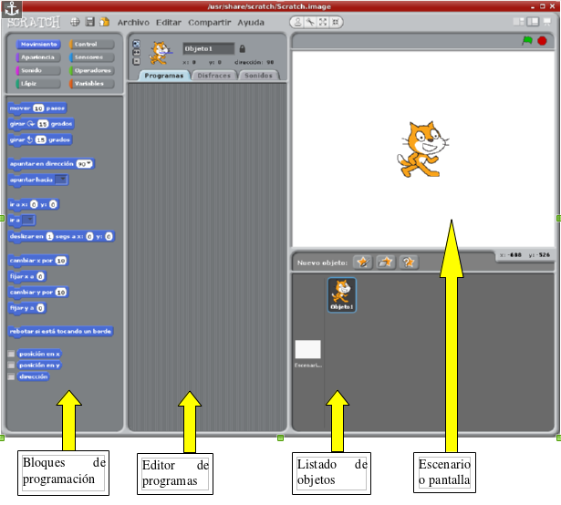

Abre una sesión de Scratch e intenta familiarizarte con él.
 Para esto simplemente intenta que el gato se mueva por la pantalla.
Las órdenes se encuentran en los bloques de programación. Son como piezas de puzzle que se insertan unas debajo de otras.
Para conseguir esto se seleccionan y se arrastran al editor de programas. Se puede comprobar lo que hace si aquí se hace doble clic sobre el bloque. ¡Ojo! Los movimientos suelen ser por defecto de 10 en 10 que es muy poco en pantalla. Si quieres ver mejor su efecto sube a 100 los pasos.
Si el bloque no nos sirve se vuelve a arrastrar a la zona de bloques y ya está.
En la zona de listado de objetos puedes cambiar o incluir más objetos. También puedes dibujarlos tu mismo. O bien, descargar las imágenes de Internet.
Otro cambio que puedes hacer es seleccionar en el listado de objetos el escenario y, en vez del fondo blanco, puedes poner cualquier otro fondo.
Tanto los fondos de escenario como los personajes pueden ser editados para que tengan más de una apariencia. A esto se le denominan disfraces y se suele usar para dar la sensación de movimiento. Esto no se hace incluyendo un nuevo objeto sino cambiando en el editor de programas de Programa a Disfraces.
Otros elementos que se puede incluir en el editor de programas son sonidos.
Trastea por todos los bloques e intenta hacer movimientos y ejecuciones automáticas.